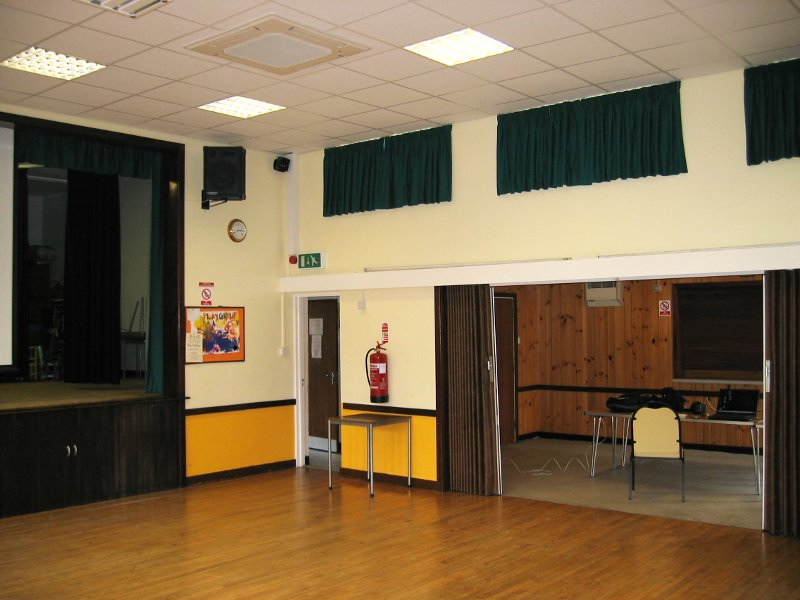
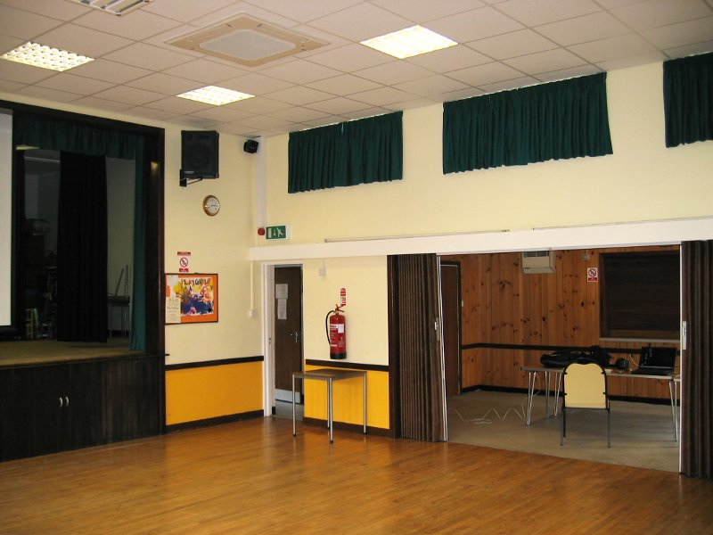
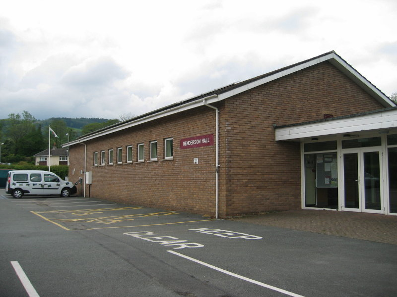
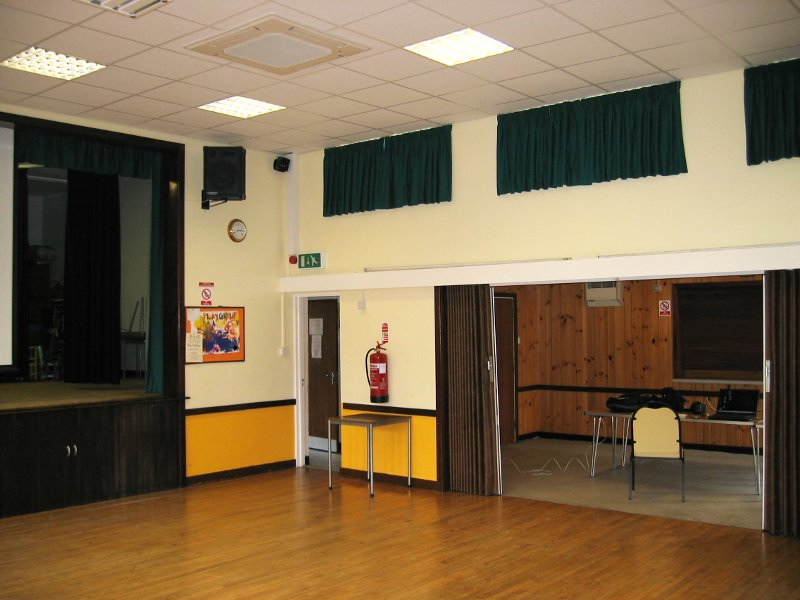

The 2014 LBW is planned for 20th–26th July 2014 in the village of Talybont-on-Usk, Wales.
Our registration site is now up, please register!
LBW is a week-long event which takes place in a different European country each summer, drawing together Open Source software enthusiasts from more than a dozen different countries, for a combination of talks, presentations, hands-on mini-projects, outdoor exercise, and good food and drink. If you're new to LBW, we have more information about LBW here.
If you would like to come, please register and get in touch.
We have booked a hall in Talybont-on-Usk, Henderson Hall. The hall is a flexible space, with a concertina divider across the middle, and between the hall and adjacent meeting room to which we also have access. There is even a stage!
There is a kitchen adjacent to the meeting room. It has two kettles and a water boiler, so we will be well supplied for tea. There is a dishwasher, so no excuse for leaving unwashed crockery! We are able to use the kitchen for making hot drinks all week. We have negotiated to use it for cooking proper on one day for pot-luck, and also to support are barbecue on Friday.
The kitchen may also be used for cooking your evening meal provided you donate £5 per person per day.
Technology wise, we have a 6Mbs-1 Internet connection, data projector with screen, stereo sound system. A DVD player is set up ready to use.


There are fields and a children's playground with swings and roundabouts adjacent to the hall, owned by the Talybont on Usk parish council. We need get in touch with them if we'd like to do anything on the fields.
Talybont-on-Usk, an agreeable village in Wales. It has a CAMRA award winning pub, a canal, a river, and the Brecon Beacons National Park almost on top of you. The village is also called Tal-y-bont ar Wysg in Welsh.
There is a free (for UK debit cards) cash machine at the post office. Post Office (Swyddfa'r Post Cyf) opening hours are Monday to Saturday, 09:00 to 13:00. There is another cash machine at the village shop which demands fees.
Talybont-on-Usk has four pubs, all marked on this map.
The sky is blue altho it is sometimes grey. The BBC have a forecast as do the Norwegians and the Chinese. Note that with all the hills and mountains around, forecasts may not be as reliable as you might wish. There is a mountain forecast of unknown provenance. [% END %]